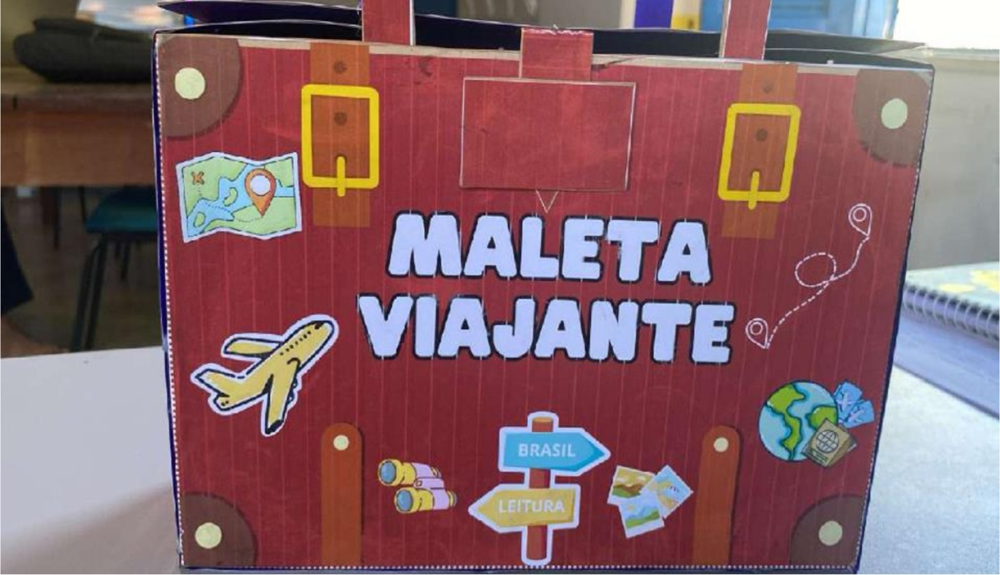

Biblioteca Escolar
📚 Projeto Maleta Viajante
O projeto Maleta Viajante incentiva a leitura entre os alunos do 1º ao 3º ano. A maleta com livros é levada para casa pelas crianças, promovendo o hábito da leitura em família.
O projeto Maleta Viajante incentiva a leitura entre os alunos do 1º ao 3º ano. A maleta com livros é levada para casa pelas crianças, promovendo o hábito da leitura em família.